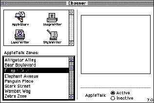

|
|
Keyboard Navigation in Dialog BoxesIn a dialog box, the user can navigate through the interface elements that accept keyboard input, such as text boxes and scrolling lists, in several ways. The user can click the desired element or press the Tab key to cycle through the available elements. The user can move backward through the available elements by pressing the combination Shift-Tab.Some scrolling lists in dialog boxes can also accept keyboard input for navigating within the list. The user can use the arrow keys to move through the list one item at a time in the direction of the arrow. Users can also select an item from the list by typing the beginning character or characters of its name; this technique is called type selection. In versions of system software earlier than System 7, type selection worked only in the standard file dialog box for opening files. In System 7, type selection has been extended to work in other lists, such as the list of files in a Finder window and the list of available devices in the Chooser. When a dialog box contains more than one element that can accept input from the keyboard, it's necessary to indicate to users which element is currently accepting input from the keyboard. For text entry boxes, a blinking insertion point or selected text range is a standard way of showing that the text entry box is the active element receiving keyboard input. When a scrolling list is the active element in a dialog box, its visual indicator is a rectangular border of two black pixels, which is separated from the list by one pixel of white space. Figure 6-22 shows the AppleTalk Zones list in the Chooser as an active scrolling list area. Figure 6-22 An active scrolling list  Since all typing goes to the active window, there should be only one active area and only one indicator at any time. If a dialog box has only one scrolling list and no other elements that can accept keyboard input, it's not necessary to outline the scrolling list. In the standard file dialog box for opening documents, the user can use type selection to identify the desired file in the list of files, but, since there's no other list or text box, the selected list doesn't have a border. See Inside Macintosh: More Macintosh Toolbox for information about implementing scrolling lists. |